Vue源码之响应式原理学习，包括vue2.x版本和vue3.0。
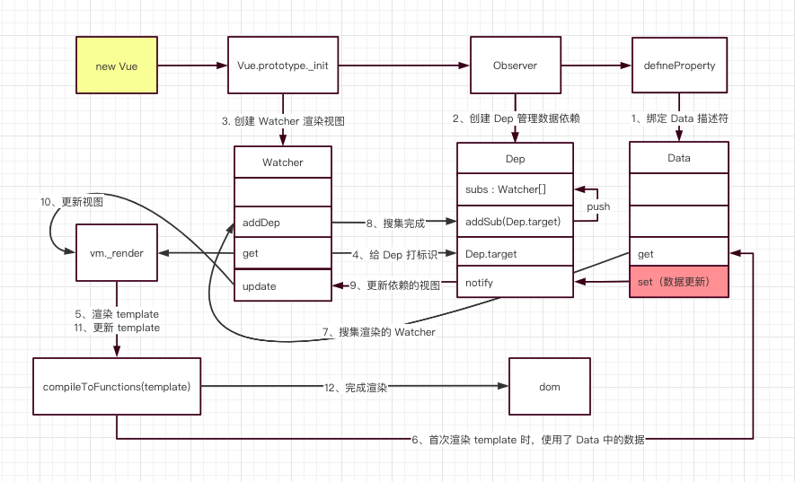
观察者模式
观察者模式，它定义了一种 一对多 的关系，让多个观察者对象同时监听某一个主题对象，这个主题对象的状态发生变化时就会通知所有的观察者对象，使得它们能够自动更新自己。在观察者模式中有两个主要角色：Subject（主题）和 Observer（观察者）。
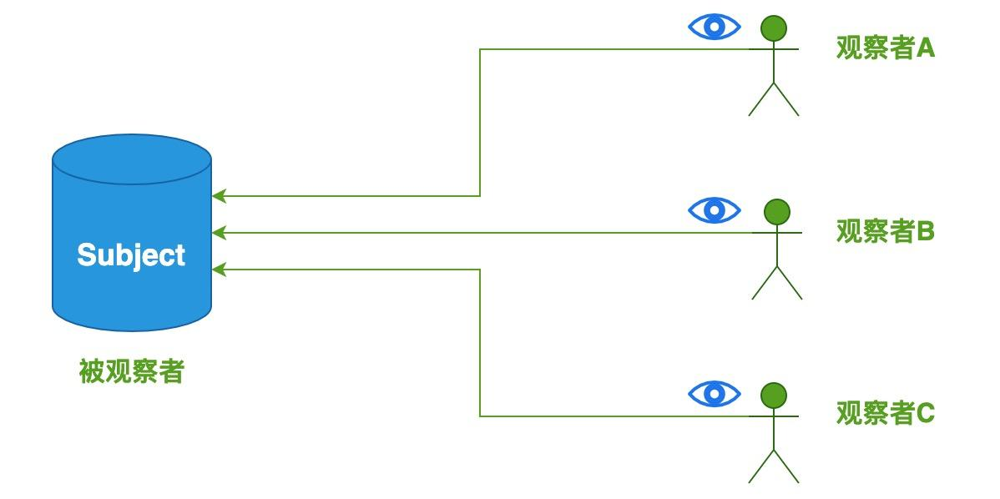
由于观察者模式支持简单的广播通信，当消息更新时，会自动通知所有的观察者。
使用 TypeScript 来实现观察者模式:
ConcreteObserver
interface Observer {
notify: Function;
}
class ConcreteObserver implements Observer{
constructor(private name: string) {}
notify() {
console.log(`${this.name} has been notified.`);
}
}
Subject 类
class Subject {
private observers: Observer[] = [];
public addObserver(observer: Observer): void {
this.observers.push(observer);
}
public notifyObservers(): void {
console.log("notify all the observers");
this.observers.forEach(observer => observer.notify());
}
}
使用示例
// ① 创建主题对象
const subject: Subject = new Subject();
// ② 添加观察者
const observerA = new ConcreteObserver("ObserverA");
const observerC = new ConcreteObserver("ObserverC");
subject.addObserver(observerA);
subject.addObserver(observerC);
// ③ 通知所有观察者
subject.notifyObservers();
主要包含三个步骤：
① 创建主题对象、② 添加观察者、③ 通知观察者。
上述代码成功运行后，控制台会输出以下结果：
notify all the observers
ObserverA has been notified.
ObserverC has been notified.
这三个步骤实现自动化，这就是实现响应式的核心思路。
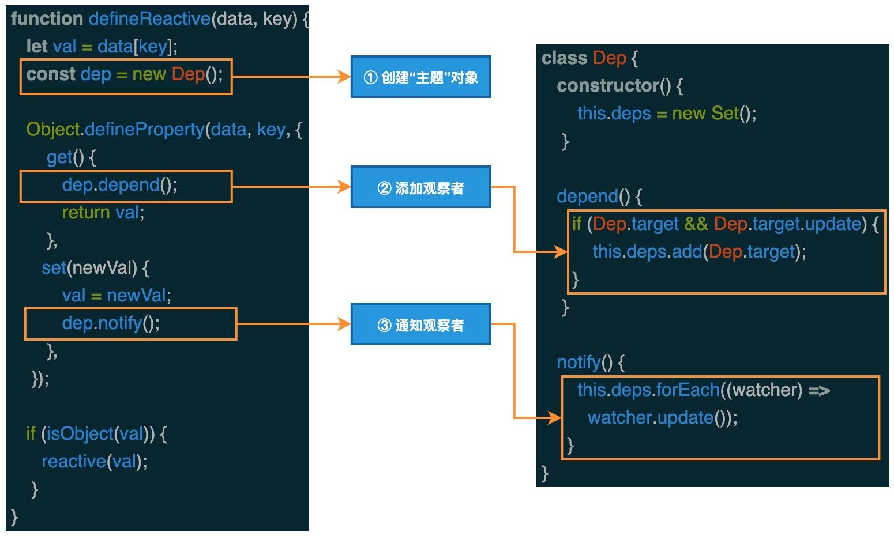
Vue响应式原理(2.6.12)
- 从 Vue 初始化，到首次渲染生成 DOM 的流程
- 从 Vue 数据修改，到页面更新 DOM 的流程
Vue 初始化
初始化 Vue 过程中处理数据的部分:
<template>
<div>
</div>
</template>
<script>
new Vue({
data() {
return {
message: "hello kitty",
};
},
});
</script>
new Vue 开始
// 执行 new Vue 时会依次执行以下方法
// 1. Vue.prototype._init(option)
// 2. initState(vm)
// 3. observe(vm._data)
// 4. new Observer(data)
// 5. 调用 walk 方法，遍历 data 中的每一个属性，监听数据的变化。
function walk(obj) {
const keys = Object.keys(obj);
for (let i = 0; i < keys.length; i++) {
defineReactive(obj, keys[i]);
}
}
// 6. 执行 defineProperty 监听数据读取和设置。
function defineReactive(obj, key, val) {
// 为每个属性创建 Dep（依赖搜集的容器，后文会讲）
const dep = new Dep();
// 绑定 get、set
Object.defineProperty(obj, key, {
get() {
const value = val;
// 如果有 target 标识，则进行依赖搜集
if (Dep.target) {
dep.depend();
}
return value;
},
set(newVal) {
val = newVal;
// 修改数据时，通知页面重新渲染
dep.notify();
},
});
}
数据描述符绑定完成后：
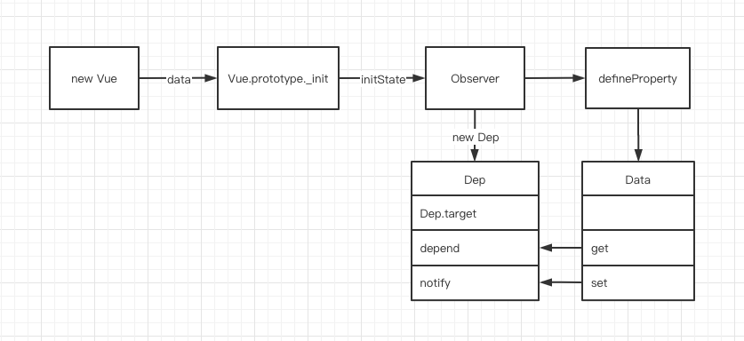
Vue 初始化时，进行了数据的 get、set 绑定，并创建了一个 Dep 对象
Dep 对象用于依赖收集，它实现了一个发布订阅模式，完成了数据 Data 和渲染视图 Watcher 的订阅
class Dep {
// 根据 ts 类型提示，我们可以得出 Dep.target 是一个 Watcher 类型。
static target: ?Watcher;
// subs 存放搜集到的 Watcher 对象集合
subs: Array<Watcher>;
constructor() {
this.subs = [];
}
addSub(sub: Watcher) {
// 搜集所有使用到这个 data 的 Watcher 对象。
this.subs.push(sub);
}
depend() {
if (Dep.target) {
// 搜集依赖，最终会调用上面的 addSub 方法
Dep.target.addDep(this);
}
}
notify() {
const subs = this.subs.slice();
for (let i = 0, l = subs.length; i < l; i++) {
// 调用对应的 Watcher，更新视图
subs[i].update();
}
}
}
从 new Vue 开始，首先通过 get、set 监听 Data 中的数据变化，同时创建 Dep 用来搜集使用该 Data 的 Watcher
对 Dep 的源码分析:
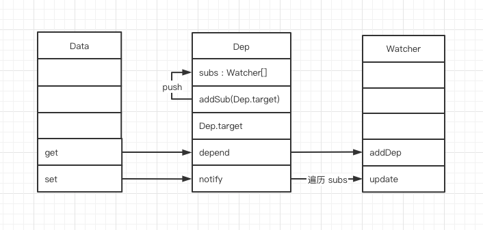
了解 Data 和 Dep 之后，我们讲一下 Watcher
class Watcher {
constructor(vm: Component, expOrFn: string | Function) {
// 将 vm._render 方法赋值给 getter。
// 这里的 expOrFn 其实就是 vm._render，后文会讲到。
this.getter = expOrFn;
this.value = this.get();
}
get() {
// 给 Dep.target 赋值为当前 Watcher 对象
Dep.target = this;
// this.getter 其实就是 vm._render
// vm._render 用来生成虚拟 dom、执行 dom-diff、更新真实 dom。
const value = this.getter.call(this.vm, this.vm);
return value;
}
addDep(dep: Dep) {
// 将当前的 Watcher 添加到 Dep 收集池中
dep.addSub(this);
}
update() {
// 开启异步队列，批量更新 Watcher
queueWatcher(this);
}
run() {
// 和初始化一样，会调用 get 方法，更新视图
const value = this.get();
}
}
编译模板，创建 Watcher，并将 Dep.target 标识为当前 Watcher
编译模板时，如果使用到了 Data 中的数据，就会触发 Data 的 get 方法，然后调用 Dep.addSub 将 Watcher 搜集起来
源码中我们看到，Watcher 实现了渲染方法 _render 和 Dep 的关联， 初始化 Watcher 的时候，打上 Dep.target 标识，然后调用 get 方法进行页面渲染。
加上上文的 Data，目前 Data、Dep、Watcher 三者的关系如下：
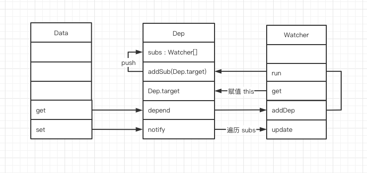
整体流程：
Vue 通过 defineProperty 完成了 Data 中所有数据的代理，当数据触发 get 查询时，会将当前的 Watcher 对象加入到依赖收集池 Dep 中，当数据 Data 变化时，会触发 set 通知所有使用到这个 Data 的 Watcher 对象去 update 视图。
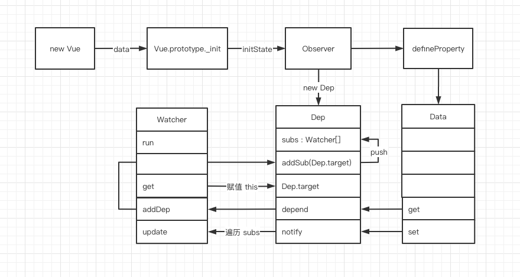
上图的流程中 Data 和 Dep 都是 Vue 初始化时创建的，但现在我们并不知道 Wacher 是从哪里创建的
模板渲染
数据渲染的部分
new Vue 执行到最后，会调用 mount 方法，将 Vue 实例渲染成 dom
// new Vue 执行流程。
// 1. Vue.prototype._init(option)
// 2. vm.$mount(vm.$options.el)
// 3. render = compileToFunctions(template) ，编译 Vue 中的 template 模板，生成 render 方法。
// 4. Vue.prototype.$mount 调用上面的 render 方法挂载 dom。
// 5. mountComponent
// 6. 创建 Watcher 实例
const updateComponent = () => {
vm._update(vm._render());
};
// 结合上文，我们就能得出，updateComponent 就是传入 Watcher 内部的 getter 方法。
new Watcher(vm, updateComponent);
// 7. new Watcher 会执行 Watcher.get 方法
// 8. Watcher.get 会执行 this.getter.call(vm, vm) ，也就是执行 updateComponent 方法
// 9. updateComponent 会执行 vm._update(vm._render())
// 10. 调用 vm._render 生成虚拟 dom
Vue.prototype._render = function (): VNode {
const vm: Component = this;
const { render } = vm.$options;
let vnode = render.call(vm._renderProxy, vm.$createElement);
return vnode;
};
// 11. 调用 vm._update(vnode) 渲染虚拟 dom
Vue.prototype._update = function (vnode: VNode) {
const vm: Component = this;
if (!prevVnode) {
// 初次渲染
vm.$el = vm.__patch__(vm.$el, vnode, hydrating, false);
} else {
// 更新
vm.$el = vm.__patch__(prevVnode, vnode);
}
};
// 12. vm.__patch__ 方法就是做的 dom diff 比较，然后更新 dom，这里就不展开了。
结合Vue 模板渲染的过程得到如下的流程图：
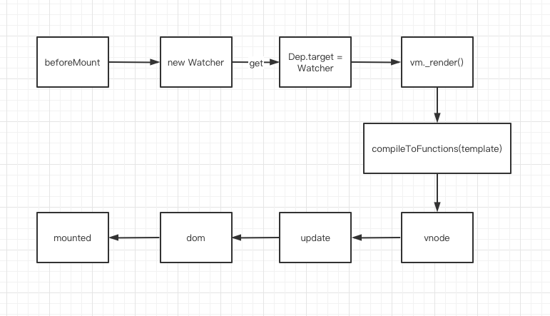
Watcher 其实是在 Vue 初始化的阶段创建的，属于生命周期中 beforeMount 的位置创建的，创建 Watcher 时会执行 render 方法，最终将 Vue 代码渲染成真实的 DOM
结合 Vue 初始化
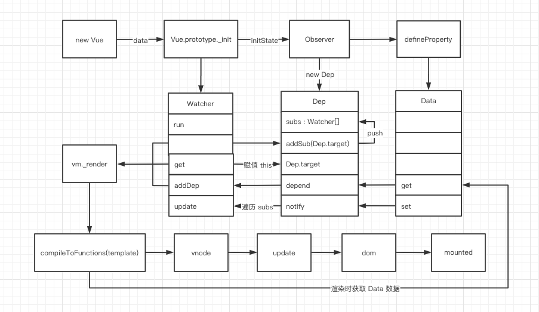
当数据变化时，Vue 又是怎么进行更新的？在 Data 变化时，会调用 Dep.notify 方法，随即调用 Watcher 内部的 update 方法，此方法会将所有使用到这个 Data 的 Watcher 加入一个队列，并开启一个异步队列进行更新，最终执行 _render 方法完成页面更新。
Vue 的响应式原理，如下图
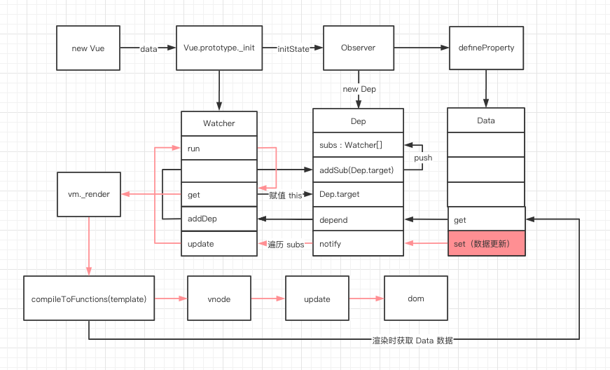
组件渲染
Vue 组件又是怎么渲染的呢？// 从模板编译开始，当发现一个自定义组件时，会执行以下函数
// 1. compileToFunctions(template)
// 2. compile(template, options);
// 3. const ast = parse(template.trim(), options)
// 4. const code = generate(ast, options)
// 5. createElement
// 6. createComponent
export function createComponent(
Ctor: Class<Component> | Function | Object | void,
data: ?VNodeData,
context: Component,
children: ?Array<VNode>,
tag?: string
): VNode | Array<VNode> | void {
// $options._base 其实就是全局 Vue 构造函数，在初始化时 initGlobalAPI 中定义的：Vue.options._base = Vue
const baseCtor = context.$options._base;
// Ctor 就是 Vue 组件中 <script> 标签下 export 出的对象
if (isObject(Ctor)) {
// 将组件中 export 出的对象，继承自 Vue，得到一个构造函数
// 相当于 Vue.extend(YourComponent)
Ctor = baseCtor.extend(Ctor);
}
const vnode = new VNode(`vue-component-${Ctor.cid}xxx`);
return vnode;
}
// 7. 实现组件继承 Vue，并调用 Vue._init 方法，进行初始化
Vue.extend = function (extendOptions: Object): Function {
const Super = this;
const Sub = function VueComponent(options) {
// 调用 Vue.prototype._init，之后的流程就和首次加载保持一致
this._init(options);
};
// 原型继承，相当于：Component extends Vue
Sub.prototype = Object.create(Super.prototype);
Sub.prototype.constructor = Sub;
return Sub;
};
图中的蓝色部分就是渲染组件的过程
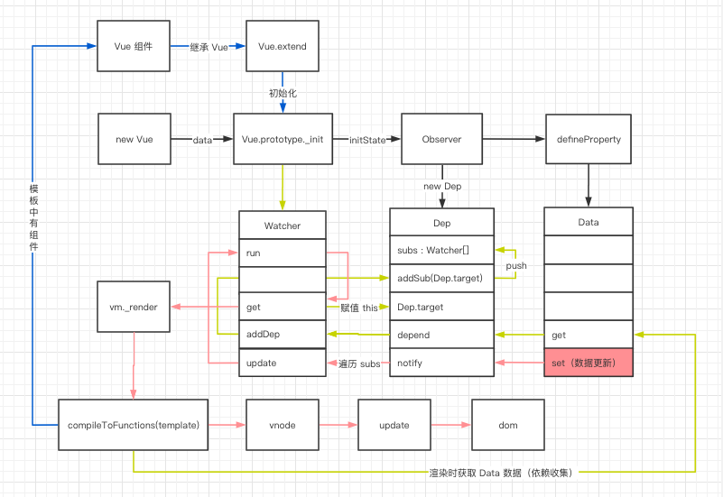
Vue 响应式原理图：
Object.defineProperty 的缺陷
如果通过下标方式修改数组数据或者给对象新增属性并不会触发组件的重新渲染，因为 Object.defineProperty 不能拦截到这些操作，更精确的来说，对于数组而言，大部分操作都是拦截不到的，只是 Vue 内部通过重写函数的方式解决了这个问题。
通过下标方式修改数组数据、给对象新增属性，不触发组件的重新渲染，Vue提供了API
export function set (target: Array<any> | Object, key: any, val: any): any {
// 判断是否为数组且下标是否有效
if (Array.isArray(target) && isValidArrayIndex(key)) {
// 调用 splice 函数触发派发更新
// 该函数已被重写
target.length = Math.max(target.length, key)
target.splice(key, 1, val)
return val
}
// 判断 key 是否已经存在
if (key in target && !(key in Object.prototype)) {
target[key] = val
return val
}
const ob = (target: any).__ob__
if (target._isVue || (ob && ob.vmCount)) {
process.env.NODE_ENV !== 'production' && warn(
'Avoid adding reactive properties to a Vue instance or its root $data ' +
'at runtime - declare it upfront in the data option.'
)
return val
}
// 如果对象不是响应式对象，就赋值返回
if (!ob) {
target[key] = val
return val
}
// 进行双向绑定
defineReactive(ob.value, key, val)
// 手动派发更新
ob.dep.notify()
return val
}
对于数组而言，Vue 内部重写了以下函数实现派发更新
// 获得数组原型
const arrayProto = Array.prototype
export const arrayMethods = Object.create(arrayProto)
// 重写以下函数
const methodsToPatch = [
'push',
'pop',
'shift',
'unshift',
'splice',
'sort',
'reverse'
]
methodsToPatch.forEach(function (method) {
// 缓存原生函数
const original = arrayProto[method]
// 重写函数
def(arrayMethods, method, function mutator (...args) {
// 先调用原生函数获得结果
const result = original.apply(this, args)
const ob = this.__ob__
let inserted
// 调用以下几个函数时，监听新数据
switch (method) {
case 'push':
case 'unshift':
inserted = args
break
case 'splice':
inserted = args.slice(2)
break
}
if (inserted) ob.observeArray(inserted)
// 手动派发更新
ob.dep.notify()
return result
})
})
Vue 3.0（proxy）
Proxy 在 ES2015 规范中被正式发布，它在目标对象之前架设一层“拦截”，外界对该对象的访问，都必须先通过这层拦截，是Object.defineProperty的全方位加强版。
用法如下，new Proxy()表示生成一个Proxy实例，target参数表示所要拦截的目标对象，handler参数也是一个对象，用来定制拦截行为。
var proxy = new Proxy(target, handler);
var proxy = new Proxy({}, {
get: function(obj, prop) {
console.log('设置 get 操作')
return obj[prop];
},
set: function(obj, prop, value) {
console.log('设置 set 操作')
obj[prop] = value;
}
});
proxy.time = 35; // 设置 set 操作
console.log(proxy.time); // 设置 get 操作 // 35